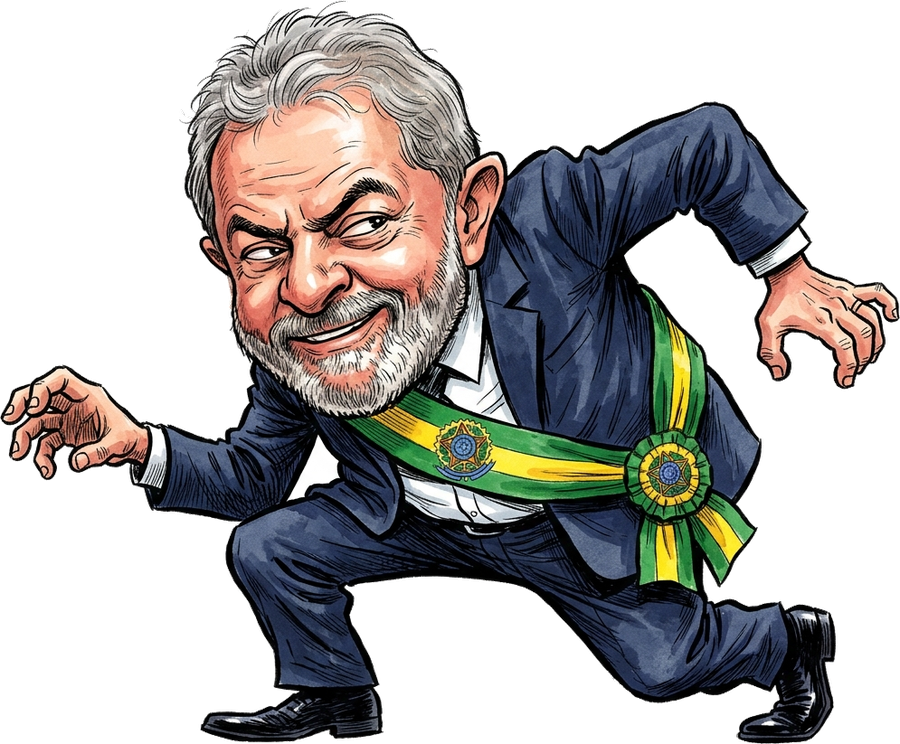
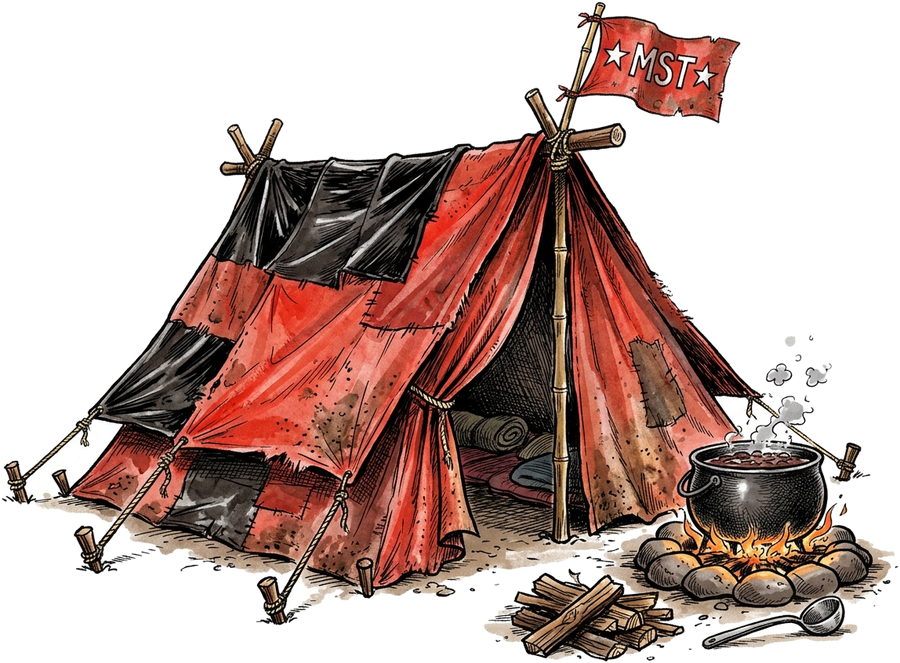
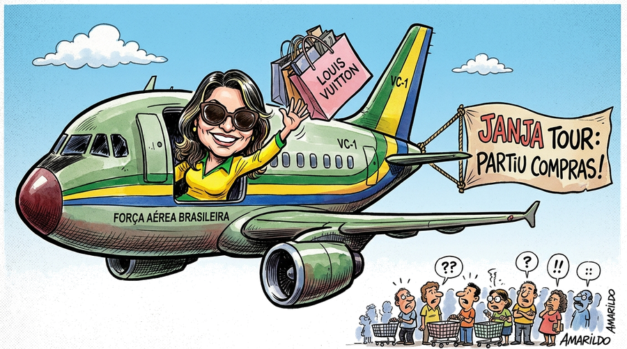
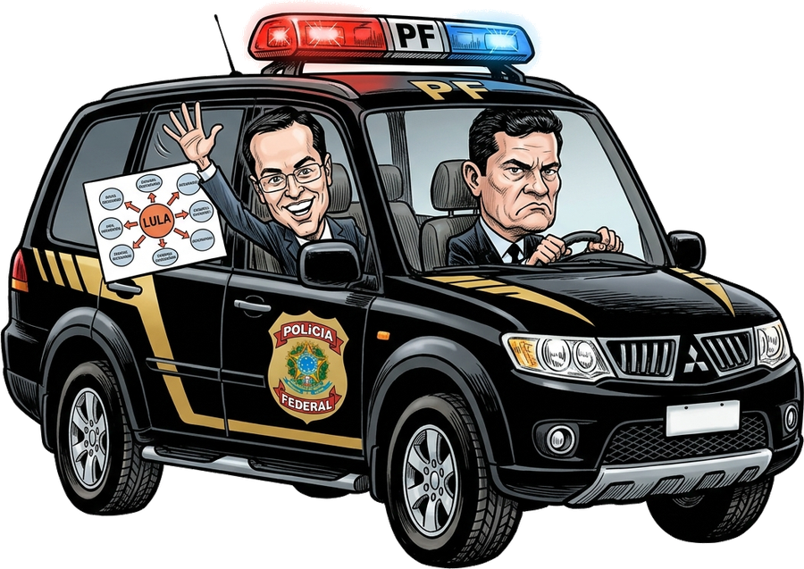
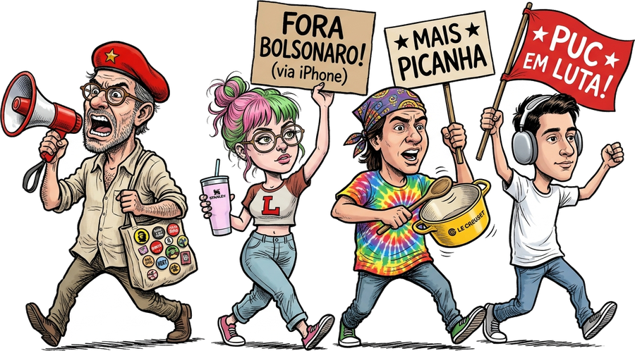
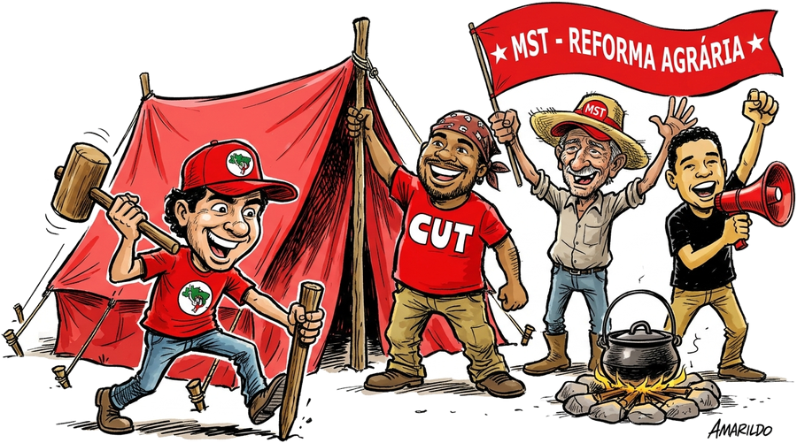
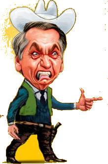

Um pet virtual satírico em 60 FPS com charges editoriais no estilo de Amarildo. Ele passeia pelas suas janelas, pega seu mouse para uma "checagem solidária", culpa a herança maldita por qualquer lentidão do Windows e recebe visitas épicas do Xandão, MST, Janja e da Polícia Federal!
"Companheiro, onde fica o app do Nubank nessa tela? É só pra uma conferida solidária!"
Um ecossistema completo de humor brasileiro que interage dinamicamente com seu uso do computador.

Periodicamente, o companheiro se aproxima nas pontas dos pés, captura seu mouse por 2,5 segundos e o esconde discretamente no paletó, antes de devolvê-lo com um sorriso inocente.
Ao comando ou aleatoriamente, o Ministro surge de toga com sua careca reluzente, bate o martelo da justiça na tela e decreta a prisão cautelar do cursor com mandado de soltura no prazo improrrogável!

Se você deixar o PC inativo por mais de 30 segundos, o MST ocupa a tela argumentando que o monitor é improdutivo! Eles montam até 4 barracas com caldeirão de feijoada até você mexer o mouse.

O jato presidencial oficial da FAB rasga seu monitor com som de turbinas, enquanto a Primeira Dama Janja acena da janela exibindo suas sacolas de grife com a faixa aérea "PARTIU COMPRAS!".

Viatura preta da PF com giroflex azul e vermelho em alta velocidade com Moro ao volante e Deltan segurando seu famoso PowerPoint cheio de flechas para evacuar o acampamento!

Estudantes de humanas marcham com megafones, beret estilo Che Guevara, panela Le Creuset, fone AirPods Max e o icônico copo Stanley gritando "Mais picanha!".
Mova o cursor dentro da caixa abaixo. O companheiro vai perseguir seu mouse e soltar comentários exclusivos!
Efeitos originais sincronizados com cada ação na área de trabalho. Clique nos botões para ouvir uma prévia:
Xandão batendo o martelo judicial
Contagem regressiva de reintegração
Viatura da PF chegando para o flagrante
Sobrevoo rasante das compras da Janja
Manifestação gourmet dos universitários
Pegando o mouse pra checagem solidária
Ilustrações de alto nível com traços clássicos de cartum de jornal e hachuras artesanais.
O Companheiro Presidente
"O mouse travou? Herança maldita!"O Guardião da Constituição
"Prisão preventiva do cursor decretada!"
Ocupação de Áreas Improdutivas
"30s sem mexer? Desktop desapropriado!"Força Tarefa da Federal
"Temos convicção no PowerPoint!"Primeira Dama VIP
"Partiu compras em Paris e Nova York!"
O Culpa de Tudo
"Olha aí a arminha da barra de tarefas, talkei?"Não! O aplicativo é 100% portátil (standalone). Ele vem em um único arquivo DesktopLula.exe. Basta dar dois cliques e ele começa a rodar imediatamente, sem modificar registros do Windows e sem precisar de permissões elevadas de Administrador (UAC).
Sim, como se trata de um executável independente novo e sem certificado comercial da Microsoft de dezenas de milhares de dólares, o Windows pode exibir a tela azul do SmartScreen. Basta clicar em "Mais informações" e depois em "Executar assim mesmo". O código é 100% limpo, feito em Python e PyQt6.
O Desktop Lula fica discretamente na bandeja do sistema (perto do relógio do Windows). Basta clicar com o botão direito no ícone presidencial para abrir o menu completo com opções de Pausar, Silenciar Sons, Disparar Ações Manuais ou Fechar.
Sim! É totalmente compatível com Windows 10 e Windows 11 (64-bit), suportando múltiplos monitores e mantendo transparência suave com aceleração de hardware.
Não! Todas as interações com o mouse duram apenas cerca de 2 segundos para fins de piada visual e devolvem imediatamente o controle total do cursor para você. O uso de memória RAM é de apenas ~10 a 20 MB.
Este projeto foi concebido estritamente como uma manifestação de humor, sátira jornalística e arte gráfica digital, em total consonância com a legislação brasileira vigente.
A presente obra artística e seu software são protegidos expressamente pela Constituição Federal da República Federativa do Brasil de 1988, em seu Artigo 5º, incisos IV (livre manifestação do pensamento) e IX (liberdade de expressão da atividade intelectual, artística, científica e de comunicação, independentemente de censura ou licença).
Além disso, a Lei Federal de Direitos Autorais (Lei nº 9.610/1998), em seu Artigo 47, assegura expressamente que "são livres as paráfrases e paródias que não forem verdadeiras reproduções da obra originária nem lhe implicarem descrédito". O Plenário do Supremo Tribunal Federal (STF), no julgamento histórico da ADI 4451, consagrou que o humor, as charges e as sátiras políticas são pilares fundamentais da democracia e gozam de plena proteção jurídica.
Este website e o aplicativo Desktop Lula são produções humorísticas e lúdicas independentes. Não possuem nenhum vínculo, afiliação, representação, endosso ou financiamento por parte de quaisquer órgãos públicos, governos, partidos políticos, comitês de campanha eleitoral, entidades sindicais, movimentos sociais ou personalidades retratadas.
Todos os personagens, falas, imagens e situações retratam caricaturas cômicas inspiradas na cultura de charges editoriais de jornal e memes populares da internet brasileira, sem qualquer intenção difamatória, caluniosa ou de propaganda político-partidária.
O executável DesktopLula.exe é um software seguro desenvolvido com as tecnologias Python e PyQt6:
⚖️ Nota sobre doações voluntárias: Eventuais contribuições espontâneas via PIX constituem doações de pessoas físicas com a finalidade exclusiva de custear custos de infraestrutura e hospedagem de um projeto artístico e paródico independente, não se configurando venda de produtos, prestação de serviços ou contribuição de caráter eleitoral.
Baixe agora mesmo o executável gratuito e divirta-se com a melhor sátira política do desktop!
O Desktop Lula é 100% gratuito e livre de anúncios. Se você curtiu o projeto, que tal pagar um cafezinho ou contribuir com as despesas do Aerolula?